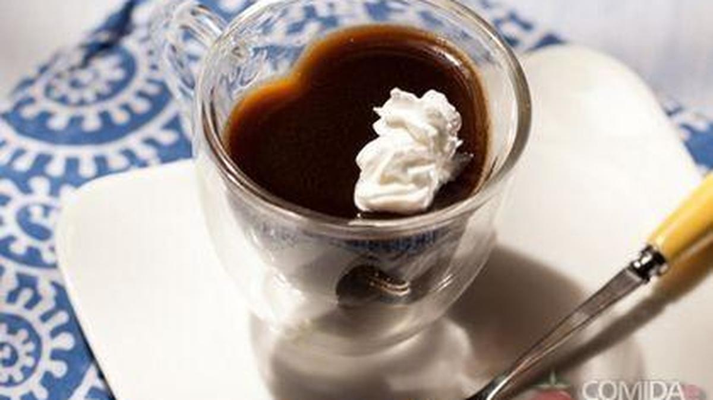

Receita de gelatina de café

INGREDIENTES
- 2 caixas de gelatina sabor limão;
- 1 colher (sopa) de café solúvel;
- 1 lata de leite condesado;
- 1 lata de creme de leite;
- 2 xícaras de água.
MODO DE PREPARO
- Dissolva a gelatina em 2 xícaras de água qunte;
- Adicione mais xícara de água fria e coloque o café deixando esfriar totalmente;
- Bata no liquidificador a gelatina com café, o leite condesado e o creme de leite e coloque em taças;
- Na hora de servir decore com cerejas (OPCIONAL).